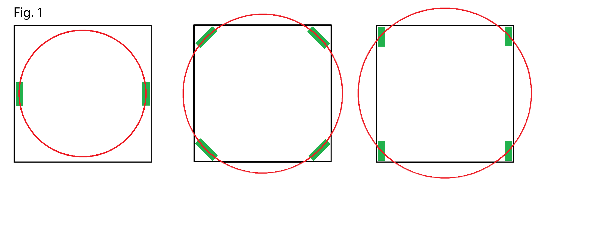
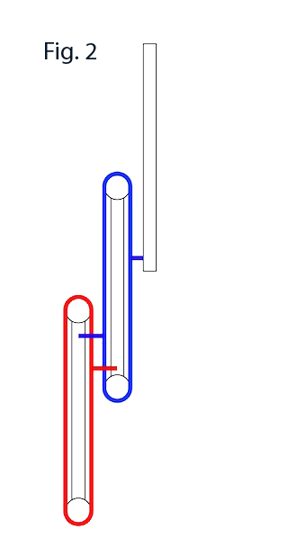
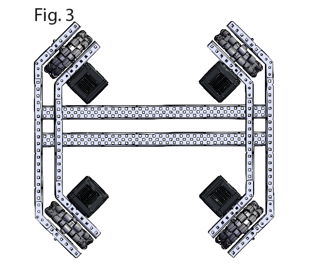
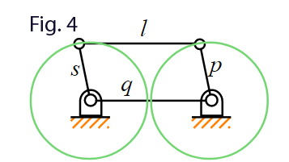

Lift
The lift is the component of a robot which allows the robot to manipulate a game object by raising its elevation to aid in scoring. There are three types of lifts that are primarily used it competition robots: rotating joints, elevators, and bar linkages.
Rotating JointsRotating joints are the simplest type of lift and consist of a metal bar fixed to a motor. This motor spins, moving the lift in an arc which changes the orientation and the position of the game object on the lift. Movement of the game object might not be desirable so another lift method might be better. The best example of the use of this type of lift is a Vex default clawbot. An example is shown by fig. 1.
ElevatorElevator lifts are the least common lift type in competition but are quite useful in specific situations. Specifically in situations where you are limited in space (e.g., a corner) and need to move a game object upwards but not forward. Upward linear motion can be achieved using linear sliders or using a more advance linear lift method called a cascade lift. An example of both a cascade and simple linear slider lift is shown by fig.2 and fig. 3 respectively.
Bar LiftsBar lifts rely on the principle that if you connect two sets of parallel bars with equal spacing, when one bar is pivoted the other bar remains parallel to it. This allows the robot to keep a game object manipulator parallel with the ground.
The simplest of bar lifts consist of 4 parallel bars which can give you considerable height. However, if you need a larger lift, a 4 bar (fig. 4) can be extended to six and eight bars. More complex bar lift types such as reverse bar lifts and double reverse bar lifts are shown.
The advantages of a bar lift are that it will keep the thing at the end of the lift parallel with the ground. This makes it easier for the driver the accurately lift and place game objects. Four and six bars are also extremely easy to construct compared to lifts such as elevators.



